about 500 to 1500
Crossroads and Golden Ages
Along the Silk Road and the sea lanes, games, instruments and crafts travelled and changed.
- Southeast Asia and the Islands (18)
- Africa: Sahel, West and Central (16)
- China (13)
- Northern and Eastern Europe (12)
- Celtic and Atlantic Europe (12)
- Mesopotamia, Levant and Arabia (10)
- Japan and Korea (10)
- Persia, Caucasus and Central Asia (9)
- South Asia (9)
- Mediterranean (9)
- The Americas: Caribbean (8)
- Africa: Nile and the Horn (6)
- Africa: Great Lakes and Indian Ocean (5)
- Pacific and Oceania (4)
- The Americas: Mesoamerica (4)
- The Americas: North America (4)
- Africa: Southern Africa (3)
- The Americas: Andes and South America (3)
- Shared across the world (2)
- Steppe and Arctic (1)
Africa: Nile and the Horn 6
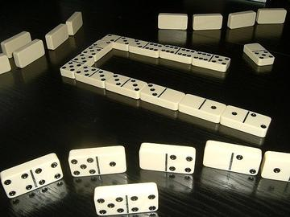
Cafe dominoes
Egypt · Board and table games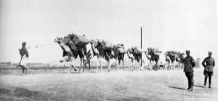
Horn of Africa camel caravan
Djibouti · Musical instruments
Ladu
Djibouti +1 · Board and table games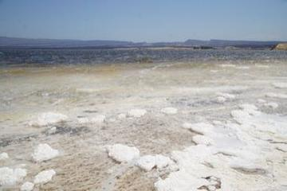
Lake Assal salt harvest
Djibouti · Sports with animal partners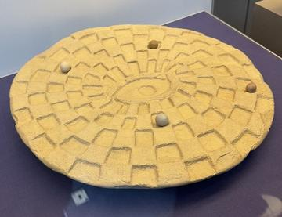
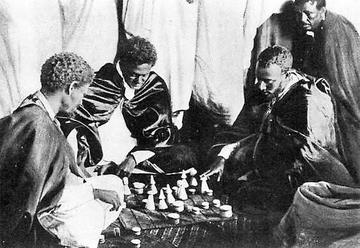
Africa: Sahel, West and Central 16

Acadja Fish Park
Benin · Board and table games
Balafon Gourd Xylophone
Mali +2 · Musical instrumentsPlay preview · in the Drum Music of the World app
Balanta Mangrove Rice Polder
Guinea-Bissau · Board and table games
Nzango
Congo · Board and table games
Ogooué river pirogue journey
Gabon · Racing
Queah
Liberia · Board and table games
Sahel Salt Caravan
Niger +1 · Sports with animal partnersPlay preview · in the Story & Theatre of the World app
Vai Syllabary Decoder
Liberia · Puzzles and mind games
Akedewama
Cote d'Ivoire · Board and table gamesChoko
Gambia · Board and table gamesDhamet
Mauritania · Board and table gamesDuo
Cote d'Ivoire · Board and table gamesFohr
Cote d'Ivoire · Board and table gamesKikouri
Cote d'Ivoire · Board and table gamesSig
Mauritania · Board and table games
Africa: Great Lakes and Indian Ocean 5
Fanoron-Telo
Madagascar · Board and table gamesOdede
Uganda · Board and table gamesTanzanian draughts
Tanzania · Board and table games
Africa: Southern Africa 3
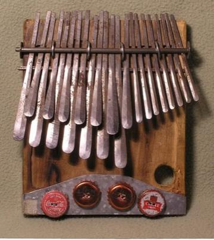
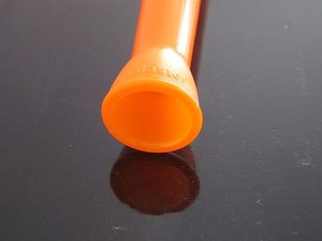
Lepapata kudu horn
Botswana · Musical instrumentsPlay preview · in the Horns & Flutes of the World app
Mesopotamia, Levant and Arabia 10

Buzuq Long-Neck Lute
Lebanon +2 · Musical instrumentsPlay preview · in the String Music of the World app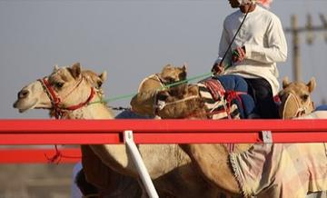
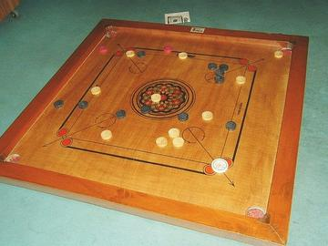
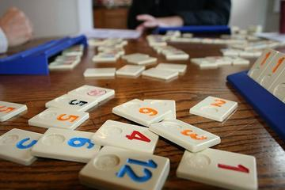
Rummikub
Israel · Board and table games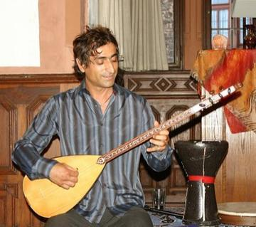
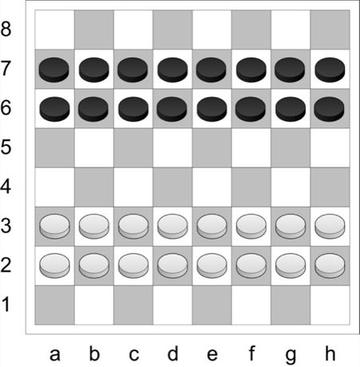
101 Okey
Turkey · Board and table gamesEdrees
Palestine · Board and table games
Persia, Caucasus and Central Asia 9
Afghan Rubab Strings
Afghanistan · Musical instruments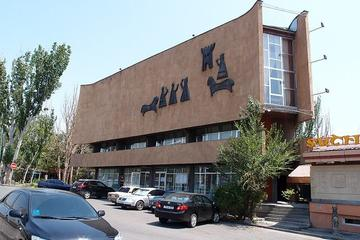
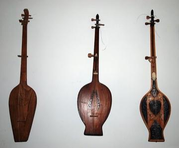
Chonguri
Georgia · Musical instrumentsDombra
Kazakhstan · Musical instruments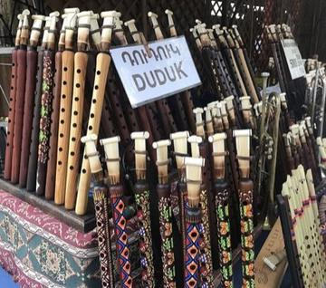
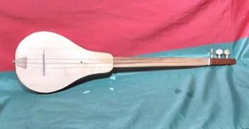
Komuz
Kyrgyzstan · Musical instruments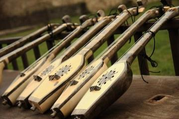
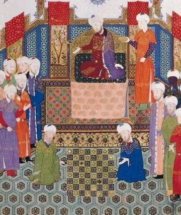
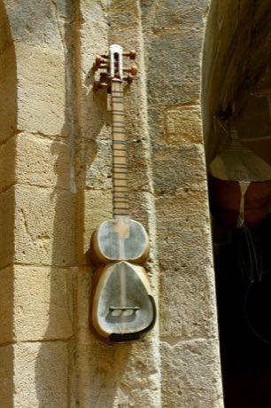
Tar and mugham modes
Azerbaijan · Musical instrumentsPlay preview · in the Lutes & Fiddles of the World app
South Asia 9
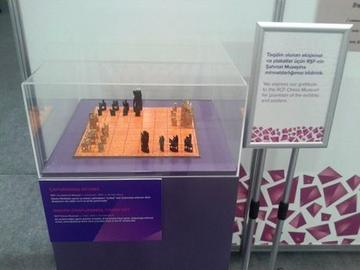
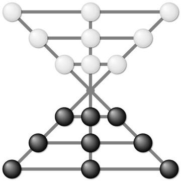

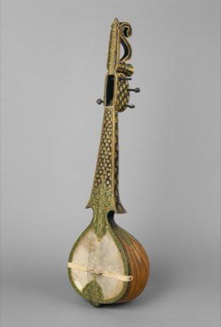
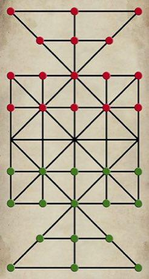
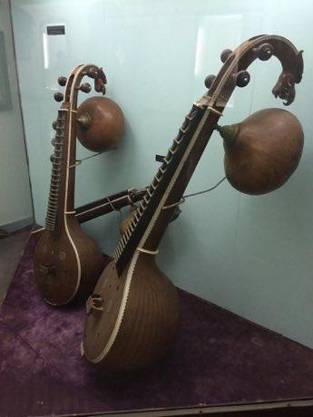
Lambs and Tigers
India · Board and table gamesMaldivian chess
Maldives · Board and table games
China 13

Banqi
China +1 · Board and table games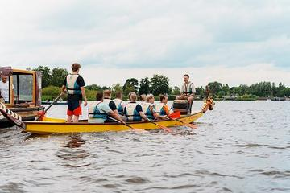
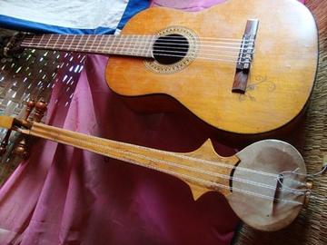
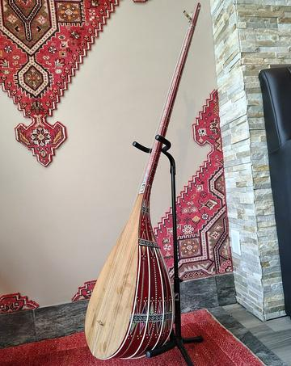
Erhu Two-String Fiddle
China · Musical instrumentsPlay preview · in the Lutes & Fiddles of the World app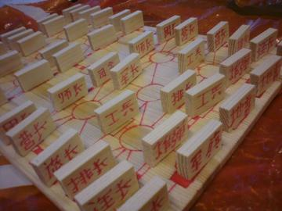
Luzhanqi
China · Board and table games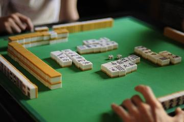
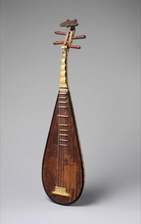
Pai gow
China · Board and table gamesTien gow
China · Board and table games
Japan and Korea 10
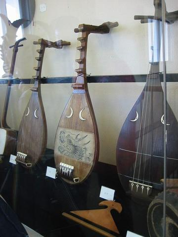
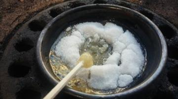
Dalgona
South Korea · Dexterity and skill games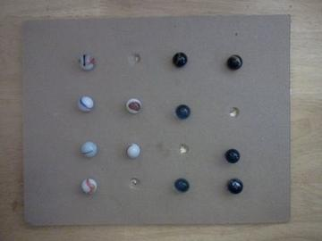
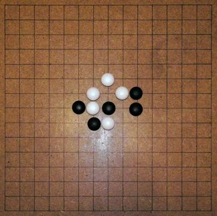
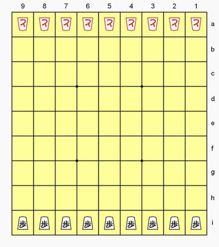
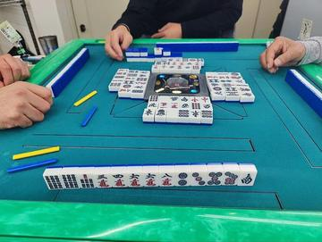
Riichi mahjong
Japan · Board and table games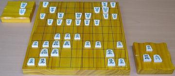
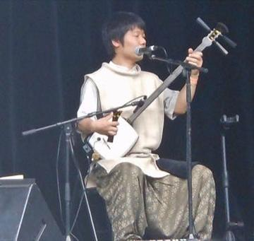
Tsugaru Shamisen
Japan · Musical instruments
Southeast Asia and the Islands 18
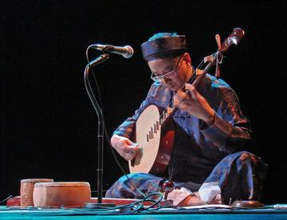
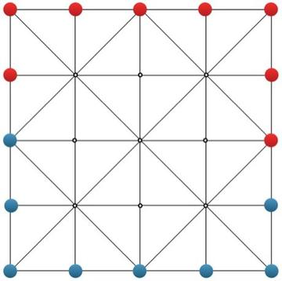
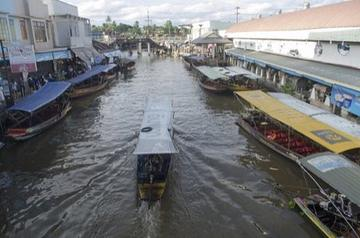
Floating market trader
Thailand · Board and table games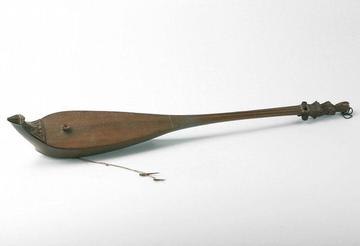
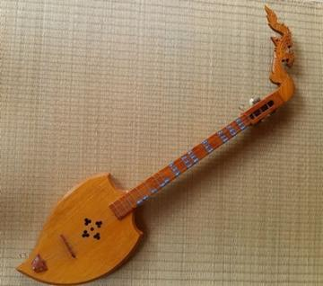
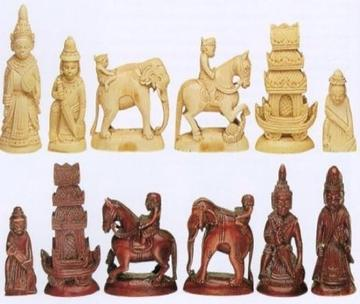
Sittuyin
Myanmar · Board and table gamesGaple dominoes
Indonesia · Board and table gamesKhmer chess
Cambodia · Board and table gamesMalay draughts
Malaysia · Board and table gamesTaiwanese mahjong
Taiwan · Board and table gamesThai checkers
Thailand · Board and table games
Pacific and Oceania 4
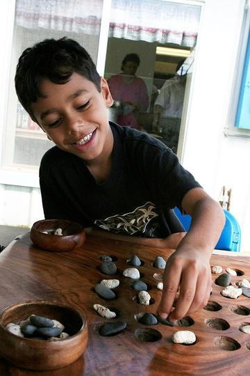
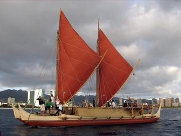
Wayfinder
United States +2 · Puzzles and mind games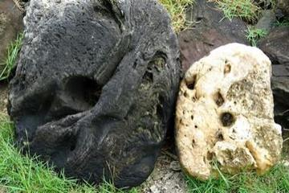
Yap stone money trade puzzle
Micronesia · Board and table games
Mediterranean 9
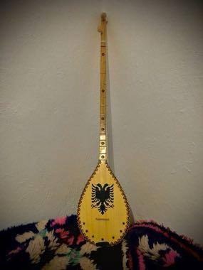
Çiftelia
Albania · Musical instruments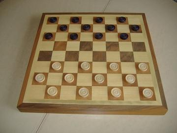
Italian draughts
Italy · Board and table games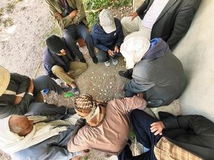

Mezoued Bagpipe and Tabl Drum
Tunisia · Musical instruments
Northern and Eastern Europe 12
Latvian Bagpipe and Folk Pipes
Latvia · Musical instruments
Shashki
Ukraine +2 · Board and table gamesCzech draughts
Czechia · Board and table gamesHungarian dominoes
Hungary · Board and table gamesPolish draughts
Poland · Board and table games
Celtic and Atlantic Europe 12
Highland Bagpipe Chanter and Drone
United Kingdom · Musical instrumentsPlay preview · in the Wind & Voice of the World appRacing Pigeon Loft
Belgium +2 · Board and table gamesWater Jousting
France · Wrestling and martial sportsDutch draughts
Netherlands · Board and table gamesPub dominoes
United Kingdom · Board and table games
The Americas: Mesoamerica 4


Puluc
Guatemala +1 · Board and table games
The Americas: Andes and South America 3

Ring jousting
Paraguay · Street and playground games
The Americas: Caribbean 8
Checkers
Bahamas +1 · Board and table gamesBahamian dominoes
Bahamas · Board and table gamesHaitian dominoes
Haiti · Board and table gamesJamaican dominoes
Jamaica · Board and table gamesSlam dominoes
Barbados · Board and table gamesUnion Jack Game
Antigua and Barbuda · Board and table games
The Americas: North America 4
Bingo
Canada · Board and table gamesChickenfoot
United States · Board and table gamesSpelling Bee
United States · Other traditionsTexas 42
United States · Board and table games